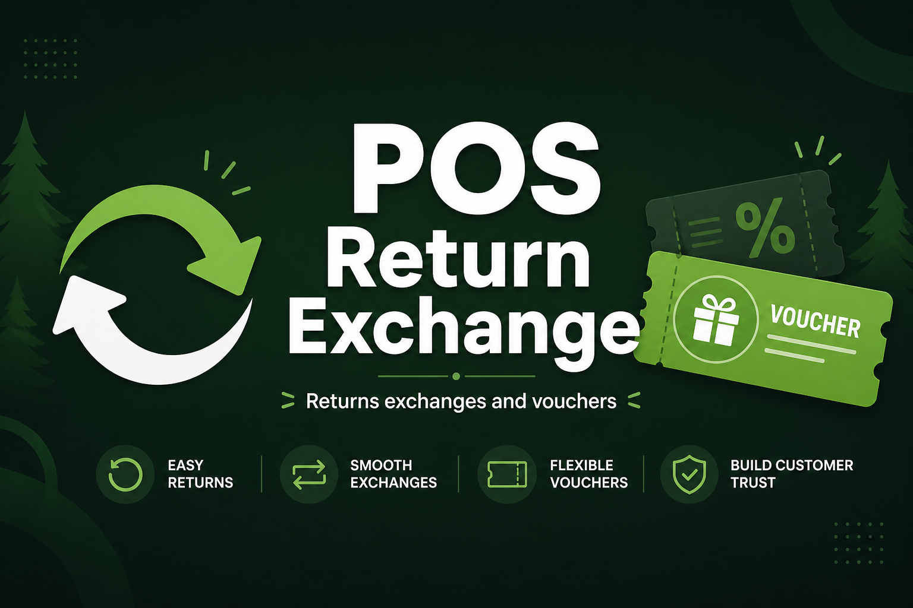
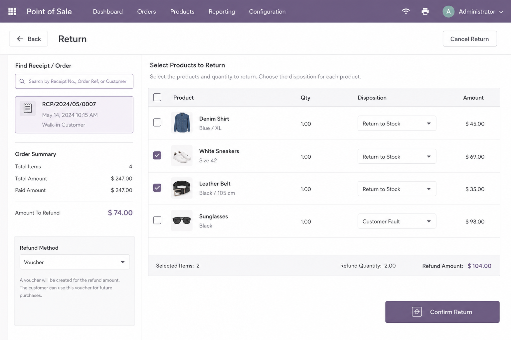
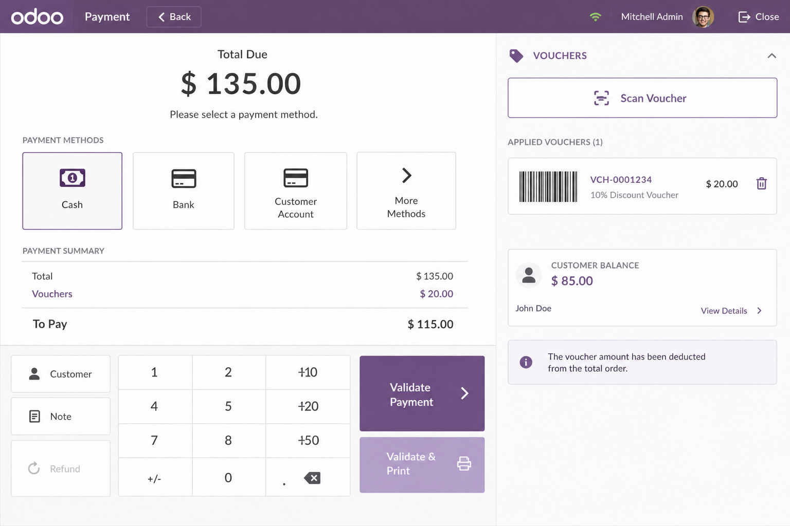
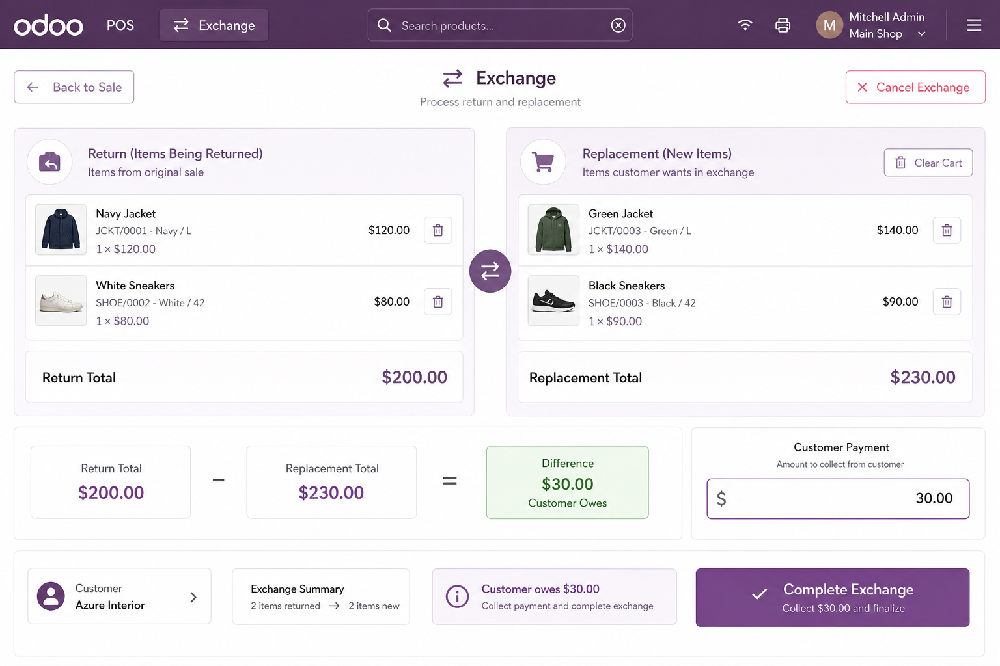
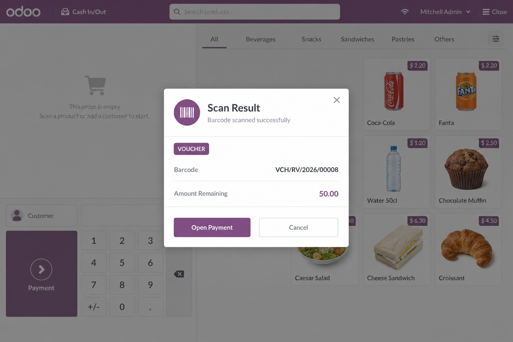
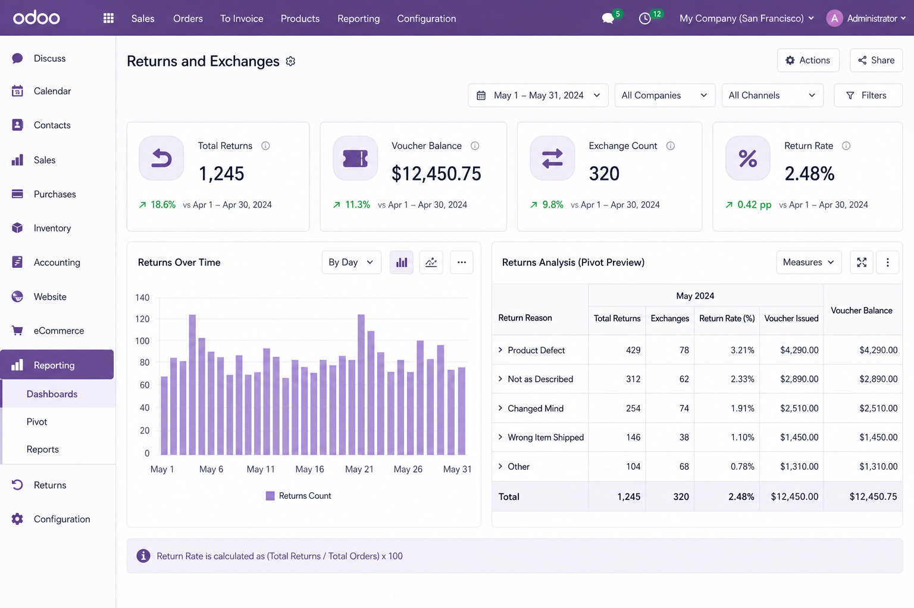
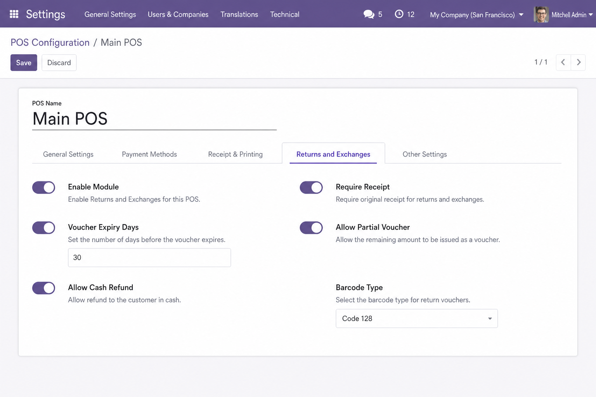
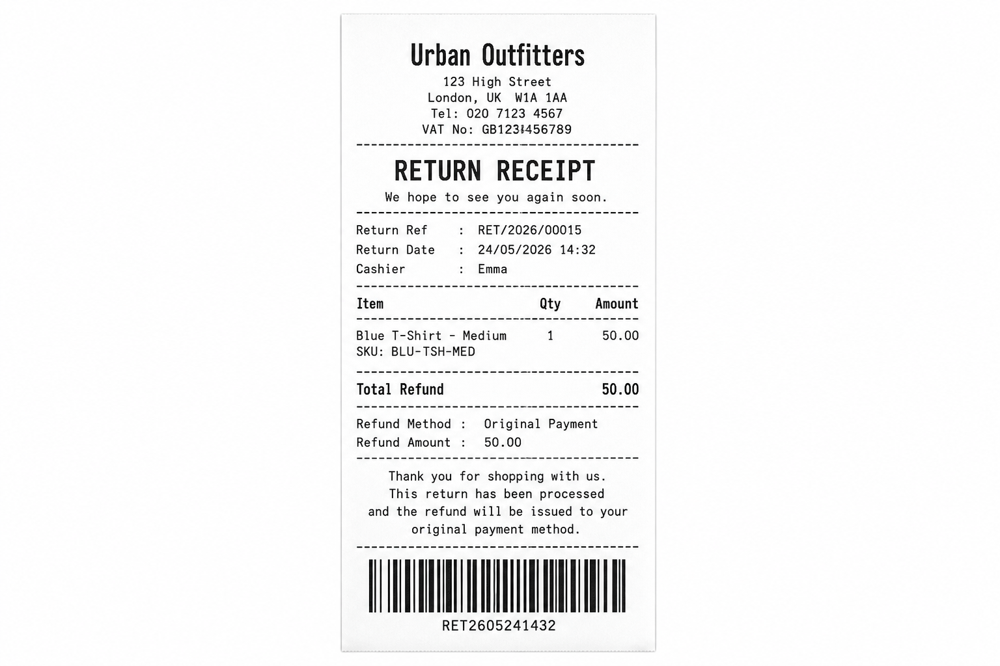
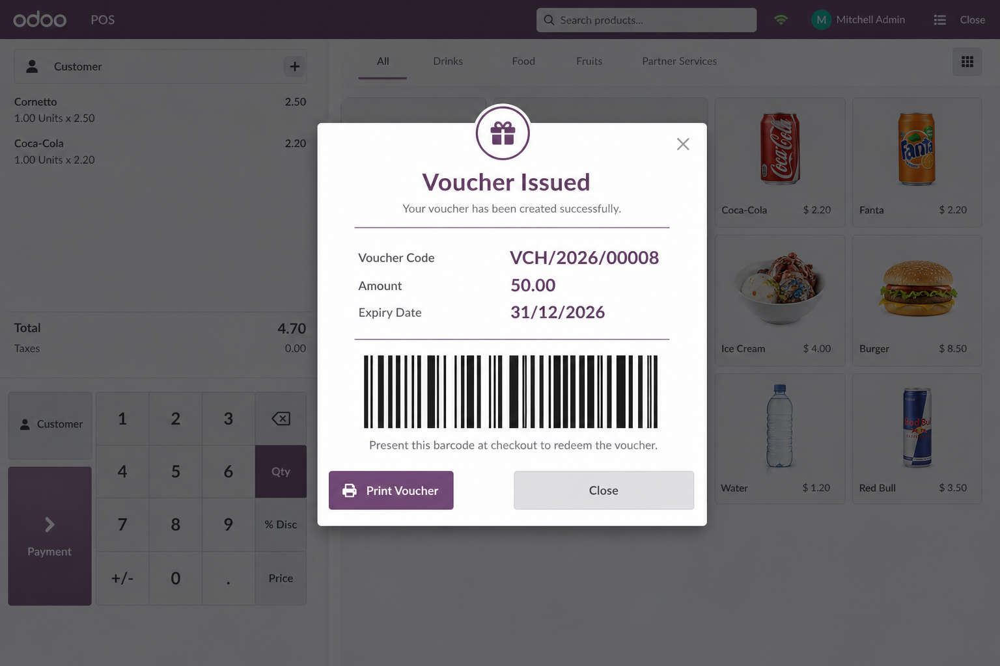
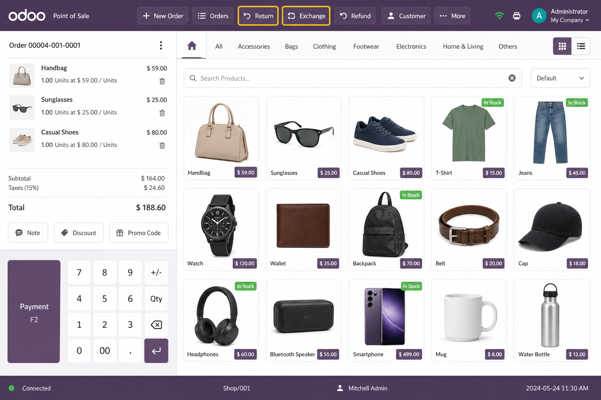

Give your retail team a professional return workflow without leaving the POS. Look up the original sale, return all or part of an order, issue vouchers, process exchanges, scan barcodes, print thermal receipts, update stock, post credit notes, and analyse return trends — fully integrated with Odoo 19 Point of Sale, Inventory, and Accounting.

Partial returns, refund methods, lot/serial tracking, and restock / quarantine / scrap disposition.
Issue store credit, print barcodes, redeem at payment — partial and multi-voucher supported.
Return items and sell replacements in one balanced settlement flow.
Cashiers open the dedicated Return screen from the product screen. Search by receipt number, order reference, invoice, customer, or product barcode. Select lines, adjust quantities, choose refund method (voucher, cash, original payment), and confirm — with manager approval when outside your refund policy window.

Extend the POS payment screen with a Voucher panel. Scan or enter voucher barcodes, apply full or partial value, use multiple vouchers on one order (when enabled), and block duplicate redemption automatically.
The Exchange screen links a return document to a replacement POS order. The system calculates the price difference and settles by customer payment, voucher issuance, or balanced exchange — with exchange receipts ready to print.


Scanners work as keyboard wedges — no extra drivers. The module classifies scans as product, voucher, return document, or order reference using configurable prefixes and EAN normalization.
VCH/ and RET/ prefixes
Inventory
Return pickings are created automatically with restock, quarantine, or scrap routing.
Lot and serial numbers are validated against the original delivery.
Accounting
When the original POS order is invoiced, credit notes can be created and posted
automatically according to your settings.
Thermal receipts
Print return, voucher, and exchange receipts in 58 mm or
80 mm PDF format — ready for thermal printers.
Audit trail
Every validation, redemption, print, and cancellation is logged for compliance
and store manager review.

Managers get a full reporting suite under Point of Sale → Reporting → Returns & Exchanges:
Set company-wide defaults or override per POS register:

Role-based permissions under POS Return & Exchange: Cashier (create returns, redeem/print vouchers), Manager (+ cash refunds, cancel vouchers, reports, settings), Administrator (full access). Multi-company record rules protect data across companies.

Return receipt (58 / 80 mm)

Voucher issued

POS control buttons
| Odoo version | 19.0 |
| Depends on | Point of Sale, Inventory, Accounting, Product, Mail, Web |
| License | LGPL-3 |
| Excel export | Python package xlsxwriter (optional) |
| Documentation | README.md and docs/ folder included in the module |
For support requests:
sales@codebraze.com
Module technical name: cb_pos_return_exchange
Full installation, configuration, user manual, API reference, and upgrade guides
are shipped inside the module under docs/.
Built for Odoo 19 · License LGPL-3